I build the tests that catch what shouldn't ship, and the frameworks that make sure it doesn't happen twice. Nine years into software quality, still treating every new tool, language and edge case as the next thing worth learning.
A path that started in electronics and signal processing, took a detour into photography and hospitality, and landed — deliberately — in software quality.
Technological Educational Institute of Thessaloniki. A broad grounding in electronics and the specialised software that drives it — where "wired for growth" first started to mean something literal.
Cardiff University. A deep dive into communications and DSP that sharpened an appetite for precision — for finding the signal in the noise, a habit that carried straight into testing.
Supervising a university coffee shop, then working as a photographer and founding the Cardiff Photography Club, which grew past 250 members in its first year. Not a detour from growth — a different expression of it.
ISTQB certified and working as a QA Tester, then Test Analyst at Computershare UK — writing BDD feature files, building regression suites, and learning the discipline of quality from the ground up.
Manual and automated testing on core banking systems, and a first serious automation project covering loan processing end to end.
Building performance and component test frameworks from scratch, root-causing defects across FX trading flows, and using AI tooling to move faster without cutting corners on quality.
Open University, studied part-time alongside full-time work. Now at the final project stage — proof that growth mindset isn't a slogan, it's a schedule.
Nine years across banking, financial services and payments — building test frameworks that outlast the projects they started with.
Root-causing the failures that don't have an obvious explanation — the flaky tests, the edge cases, the bugs that only show up under the right conditions. The unglamorous work that keeps systems honest.
Co-creating acceptance criteria with developers, pairing formally and informally, and sharing test coverage early so gaps get caught before they ship.
New tools, new languages, new AI workflows — I'd rather learn the thing than avoid it. That's the whole point of a growth mindset.
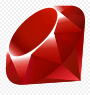
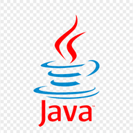
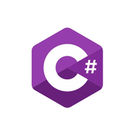
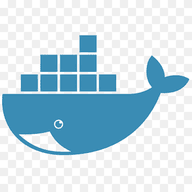
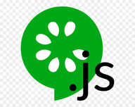
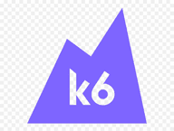
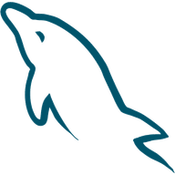
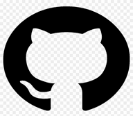
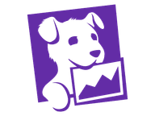
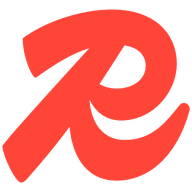
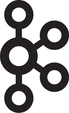
Java (Spring Boot), Ruby, C#, HTML
Selenium WebDriver, SpecFlow, Cucumber, Jenkins, Microsoft Test Manager, TFS
Gatling and K6 — frameworks built from scratch for multiple services
Jenkins, Jenkinsfiles, Maven, Helm charts, GitHub PR review, Datadog
Docker for local stacks, Kubernetes for preview namespace testing
Claude and GitHub Copilot for code, PR workflows and automating tickets
Kafka, FIX connections for FX trading integrations
Azure primarily, working knowledge of AWS
MySQL, Redis, Excel, Confluence, Linux & Windows, Agile/Scrum
I couldn't include real cover art here for copyright reasons, so each one gets its own colour instead. Sentences below are drafts — swap in your own take.
A reminder of how much language and quiet compliance shape what we accept as normal.
Read as a kid — the book that first made engineering and exploration feel like the same adventure.
A grounded, evidence-first look at big problems — a good model for testing assumptions rather than trusting them.
Small, repeatable systems beat big one-off efforts — the same logic that makes a good regression suite work.
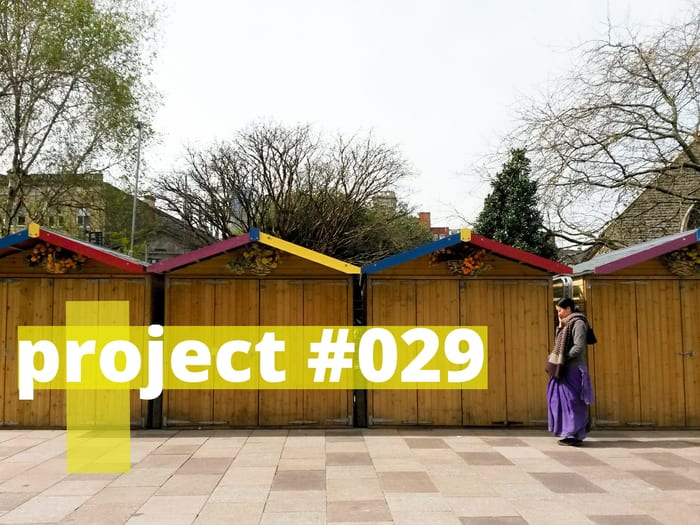
zero2nine project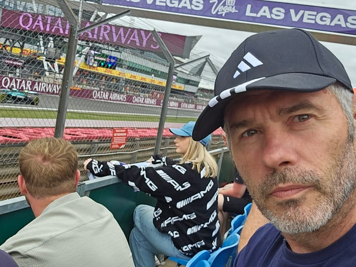
Silverstone